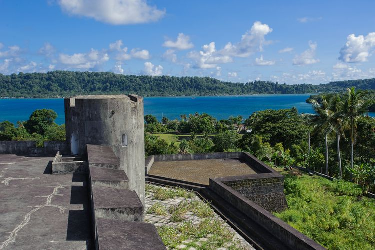

Sejarah
Banda Neira pernah menjadi pusat perdagangan pala dan fuli (bunga pala) dunia, karena Kep. Banda adalah satu-satunya sumber rempah-rempah yang bernilai tinggi itu hingga pertengahan abad ke-19.
Kota modernnya didirikan oleh anggota VOC, yang membantai penduduk Banda untuk mendapatkan palanya pada tahun 1621 dan membawa yang tersisa ke Batavia (kini Jakarta) untuk dijadikan budak.
Pulau ini juga terkenal sebagai tempat pembuangan tahanan politik pada masa Pemerintahan Kolonial Hindia Belanda. Beberapa tokoh perjuangan nasional yang pernah merasakan tinggal di pulau ini di antaranya Mohammad Hatta, Sutan Syahrir, dan Cipto Mangunkusumo. Pada 2016, rumah tempat Sutan Syahrir dan Mohammad Hatta tinggal telah dijadikan museum sedangkan rumah Cipto Mangkusumo masih dibiarkan kosong.
Geografis
Banda Neira atau Banda Naira adalah salah satu pulau di Kepulauan Banda, dan merupakan pusat administratif Kecamatan Banda, Kabupaten Maluku Tengah, Maluku, Indonesia.
Secara administratif, Banda Neira terbagi dalam 12 desa, yakni Dwiwarna, Kampung Baru, Merdeka, Nusantara, Rajawali,Tanah Rata, Lonthoir, Walang, Katoro, Kumber, Selamon, Dender, Waer dan Pulau Hatta.
Topografi pulau ini cenderung datar, sehingga memungkinkan didirikannya kota kecil.
Pulau Banda Neira memiliki kantor pemerintahan, toko, dermaga, dan bandara.
Penduduk pulau ini berjumlah 14.000
Wisata
Banda Naira adalah salah satu dari 10 pulau vulkanik di Kepulauan Banda di provinsi Maluku.
Mendapat julukan sebagai Surga dari Timur, Banda Neira memiliki kekayaan dan keindahan alam yang luar biasa.
Lautnya penuh dengan karang menawan dan kehidupan laut yang melimpah.
Sehingga, menjadikan Kepulauan Banda tidak hanya destinasi yang kaya secara historis, tetapi juga tempat menyelam yang diakui secara internasional.
Benteng Belgica

Benteng Belgica merupakan benteng VOC yang dibangun di atas sebuah bukit, sebelah barat daya Pulau Neira, dan terletak pada ketinggian 30 meter dari permukaan laut.
Pemandangan yang ada di sekitar benteng yang dibangun pada 1611 di bawah pimpinan Gubernur Jenderal Pieter Bot ini memang sangat menakjubkan.
Menurut sejarah, benteng ini sebenarnya merupakan salah satu peninggalan Portugis yang awalnya berfungsi sebagai pusat pertahanan.
Namun pada masa penjajahan Belanda, Benteng Belgica beralih fungsi untuk memantau lalu lintas kapal yang keluar masuk Banda.
Pulau Pisang
Banda terdiri dari pulau-pulau kecil nan memesona. Salah satunya Pulau Pisang. Pulau yang dihuni oleh sekitar 50 penduduk ini memiliki perkebunana pala dan kelapa.
Pulau Pisang disebut sebagai pulau favorit bagi Sutan Sjahrir yang sering berkunjung ke sini saat masa pengasingan bersama Bung Hatta..
Pulau Pisang dikenal memiliki pesona alam bawah laut yang masih sangat terjaga. Di sini terdapat Tanjung Serang dan Tanjung Pisang yang menjadi spot diving menarik. Kondisi terumbu karang di perairan ini masih sangat bagus.
Pulau ini direkomendasikan untuk wisatawan yang suka dengan aktivitas bawah laut.
Gunung Api Banda
Gunung api yang masih aktif ini memiliki ketinggian 1.955 kaki atau 656 meter di atas permukaan laut (mdpl). Dibutuhkan waktu sekitar dua jam untuk dapat sampai ke puncak dari gunung ini.